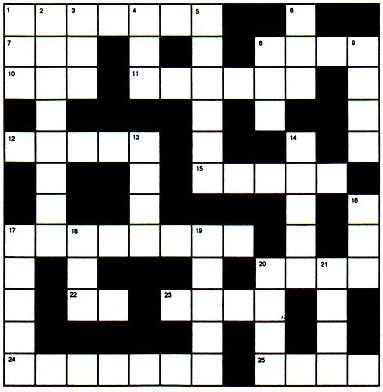

FUN PAGE!!
FIND THE HAS-BEEN CELEBRITY, TV SHOW OR ROCK BAND
1. Another reason why Philadelphia Bands belong only in Philadelphia.
2. Nutty story encorporating bad acting, bad toupees, bad scripts and a flimsy xenomorphic premise.
3. He was ugly, he was bald, and MTV played his videos every ten minutes.
4. Lance Kerwin starred as teen coming of age in the late 70's
5. As if Dynasty wasn't bad enough, It had a spinoff starring Tracey Scoggins and Stephanie Beecham
6. Stephen Bochco's botched abortion.
7. Sweetheart of Punky Brewster who recently had a breast reduction.
8. We all cringed when we saw her teeth and her acting and heard her movie soundtracks
9. If it wasn't for Vince Neil, they'd still be around today. Thanks, Vince.
10. James as fifteen gets laid.
11. Cinderella story of the 70's
12. Fox's replacement for the Sam Kinison show that sucked.
13. Had a big mid-80's hit called "Balls To The Wall", but it should have been called "Balls on my chin"
14. Some stupid show that seemed to be on every night. An early 80's "Matlock"
15. Supposedly the new Johnny Cash, she made her money from monotone urban folk songs about stabbings and starvations.
16. Her tits were everywhere. So, unfortunately, was her song "Naughty Girls Need Love Too"
17. He was scary to look at, and his cloying sense of humor was even more frightening
18. Did the homesexual version of "Where Did our Love Go". Made "Tainted Love" a hit.
19. This Austrian Gel King had lots of play on MTV singing "Der Commisar"
20. Crazy show starring Greg Evigan and a monkey.
ANSWERS
2. Manimal
3. Joe Jackson
4. "James At Fifteen"
5. "The Colbys"
6. "Cop Rock"
7. Soleil Moon Frye
8. Molly Ringwald
9. Hanoi Rocks
10. "James At Sixteen"
12. "Drexel's Class"
13. Accept
14. "Simon & Simon"
15. Tracey Chapman
16. Samantha Fox
17. Yakov Smirnoff
18. Soft Cell
19. Falco
20. BJ & The Bear
Has-Been Word Search by Joan A La Mode

ACROSS
1. "I've been moonshiner for many a year, and I've spent all my money on _____ and beer."
7. Unit of corn.
8. "Look what he has done for us he’s ____ed us up with cheer! Lord bless Charlie Mops, the man who invented beer"
10. Country Music Network
11. 2.2 liters (usually of whiskey)
12. Commie Juice
15. Slogan: "Never use _____ when Dickel will do."
17. "I'm not a ________ just because I drink more than you." - Valium Effort Song
22. "He's off ___ a bender again."
23. Mr. Daniels, to friends.
24. Hiram Walker's cheapest bourbon.
25. He sailed the ark and invented liquor.
EVIL SPIRITS
Crossword by Max
DOWN
1. A __ bar (or dream)
2. Painful day aftereffects.
3. International Radio Network.(abbr.)
4. Metal cask of beer.
5. Color of fear and beer.
6. Liquor made from juniper berries
8. Worse ___ wear. (hungover)
9. "Just too shotfaced, every day it gets worse. Tried to find my ____, but the whiskey found me first." - Valium Effort Song
13. "Running ___" (carousing)
14. It reacts with sugar to cause the wonderful process we know as fermentation.
16. What I use to clean up after one of Erich's backwards funnels.
17. Free-flowing bar beer. "On tap"
18. Kids card game or "Numero _____"
19. Joint tidbit
20. "No ____ off my nose"
21. Movie about a killer whale (NOT Free Willy)